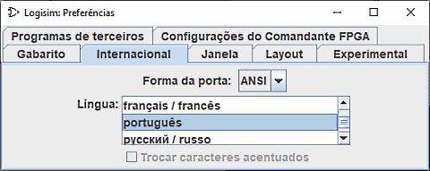

A guia International

Essa guia oferece opções que permitem ao Logisim ser usado de acordo com preferências regionais.
-
Forma da porta (Gate Shape): o Logisim oferece duas padrões para portas: IEC,ANSI. A tabela a seguir ilustrará a distinção.
ANSI IEC AND 
OR O estilo ANSI tende a ser mais popular nos EUA, enquanto o estilo IEC tende a ser mais popular na Europa, algumas pessoas se referem ao esses estilos de acordo com essas regiões.
O Logisim não segue estritamente nenhuma norma, ele procura usar um meio termo para permitir alternância entre eles. Em particular, as portas em formato convencional são mais quadradas que as dimensões definidas pelos relevantes padrões IEEE. E, apesar das portas XOR e XNOR devessem ser da mesma largura, assim como as portas OR e NOR fossem mais retangulares, elas não o são devido a dificuldades na compactação da porta XOR convencional.
-
Idioma: Alternar entre idiomas. A versão atual é fornecida para os idiomas inglês, espanhol, russo, alemão e português.
- A tradução para o alemão foi introduzida na versão 2.6.1 do Logisim. Feita por Uwe Zimmermann, um membro do corpo docente da Universidade de Uppsala, na Suécia.
- A tradução para o grego foi introduzida na versão Logisim 2.7.0. Feita por Thanos Kakarountas, um membro do Technological Educational Institute das Ilhas Ionian na Grécia.
- A tradução para o português foi introduzida na versão 2.6.2. Feita por Theldo Cruz Franqueira, um membro docente da Pontifícia Universidade Católica de Minas Gerais no Brasil.
- A tradução para o russo foi introduzida na versão 2.4.0 do Logisim. Feita por Ilia Lilov, da Rússia.
- A tradução para o espanhol estava completa na versão 2.1.0 do Logisim, mas versões posteriores Logisim acrescentaram novas opções que permanecem sem tradução. A contribuição foi feita por Pablo Leal Ramos, da Espanha.
- A tradução para o French foi parcialmente introduzida com Logisim 2.13.22. Produzido por Roberto Rigamonti e concluído em Logisim 2.14.2 por Marc-André Baillifard Université de Lausanne.
- A tradução para o italiano oi introduzida na versão 2.14.7
- A tradução para o Holandês oi introduzida na versão 2.3.0
Devido às mudanças, nem todas as traduções estão no mesmo nível e ainda há muito a ser traduzido e corrigido. Traduções e documentação Logisim são bem-vindas! Se você estiver interessado, por favor entre em contato com github.com/logisim-evolution/logisim-evolution. Isso não será um compromisso. Ficarei feliz em ouvir de seu interesse, e eu lhe direi se souber de alguém que já esteja lidando com isso; prepararei uma versão para você trabalhar, e lhe enviarei instruções. O processo de tradução não requer uma compreensão de Java.
- Substituir caracteres acentuados: Algumas plataformas têm pouco apoio para caracteres (como ñ ou ö), que não aparecem dentre os caracteres ASCII de 7 bits. Quando isso for verificado, o Logisim irá substituir todas as instâncias da caracteres com o equivalente adequado em caracteres ASCII de 7 bits. A opção estará desativada quando o idioma corrente não contiver qualquer equivalente disponível (como em inglês).
Próximo: A guia Experimental.